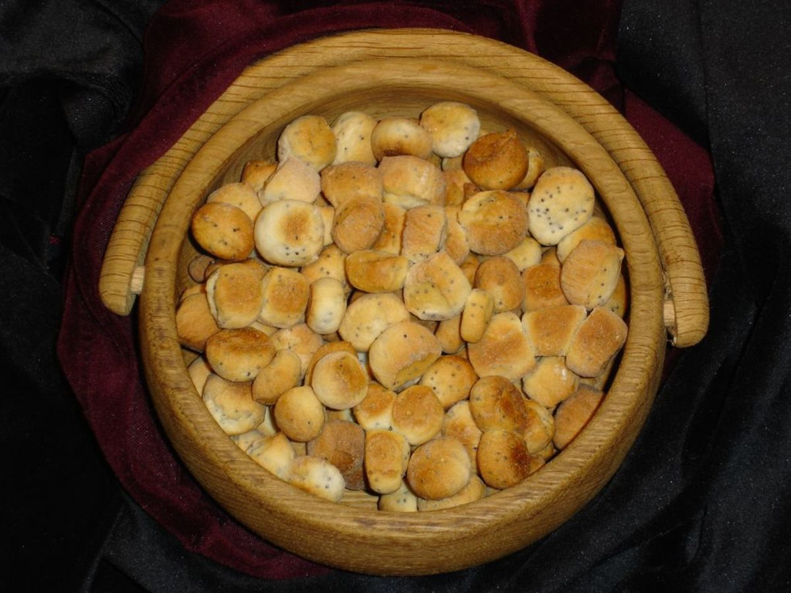

Karštai rūkytos dešros
 Informuojame, kad šioje svetainėje yra naudojami slapukai (angl. cookies). Toliau naršydami svetainėje arba paspausdami mygtuką Sutinku Jūs sutinkate su slapukų naudojimu. Savo duotą sutikimą bet kada galėsite atšaukti pakeisdami savo interneto naršyklės nustatymus ir ištrindami įrašytus slapukus. Daugiau informacijos apie slapukus galite rasti čia . Sutinku Keisti apskritį Parsisiųskite Lietuvių English Русский Registruotis Prisijungti Prisijungti RegistruotisSveiki, ačiū, kad vėl pas mus užsukote!
Caps Lock yra įjungtas
(8 5) 230 9309 Prekės Mano prekės Akcijos Eko ir ūkis Naujienos Receptai Daržovės ir vaisiai Pieno gaminiai ir kiaušiniai Duonos gaminiai ir konditerija Mėsa, žuvys ir kulinarija Bakalėja Šaldytas maistas Gėrimai Kūdikių ir vaikų prekės Kosmetika ir higiena Švaros ir gyvūnų prekės Namai ir laisvalaikis Pagrindinis puslapis Mėsa, žuvys ir kulinarija Mėsos ir paukštienos gaminiai Karštai rūkytos dešros (8 5) 230 9309 Kasdien nuo 8 iki 21 val. El. p.: pagalba@barbora.lt Mėsos ir paukštienos gaminiai 477 Karštai rūkytos dešros 27 1 Filtruoti Rūšiuoti pagal: Abėcėlę (A-Ž) Abėcėlę (Ž-A) Kainą (didėj.) Kainą (mažėj.) Be Akcijos Akcijines kainas Kaina už mato vnt. (didėj.) Kaina už mato vnt. (mažėj.) Karštai rūkyta SAMSONO kumpinė dešra, a. r., 300 g €3,29 €10,97/kg Karštai rūkyta SAMSONO kumpinė dešra, a. r., 300 g KARTU REKOMENDUOJAME Virtas rūkytas KRIVIO saliamis, a.r., 400 g €4,39 €3,29 €8,23/kg Virtas rūkytas KRIVIO saliamis, a.r., 400 g KARTU REKOMENDUOJAME Karštai rūkytas pjaustytas saliamis ŽALGIRIS, a.r., 200 g €2,49 €12,45/kg Karštai rūkytas pjaustytas saliamis ŽALGIRIS, a.r., 200 g KARTU REKOMENDUOJAME Karštai rūkytas saliamis CHOP&EAT, a. r., 200 g €1,59 €7,95/kg Karštai rūkytas saliamis CHOP&EAT, a. r., 200 g KARTU REKOMENDUOJAME Karštai rūkytas servelatas TOSTY griežinėliais, a.r., 180 g €2,19 €12,17/kg Karštai rūkytas servelatas TOSTY griežinėliais, a.r., 180 g KARTU REKOMENDUOJAME Karštai rūkytas TRADICINIS servelatas, a. r., 280 g €1,99 €7,11/kg Karštai rūkytas TRADICINIS servelatas, a. r., 280 g KARTU REKOMENDUOJAME Karštai rūkytas VILNIAUS servelatas, a. r., 350 g €3,49 €2,43 €6,94/kg Karštai rūkytas VILNIAUS servelatas, a. r., 350 g KARTU REKOMENDUOJAME Karštai rūkytas KLAIPĖDOS saliamis, a.r., 500 g €5,39 €10,78/kg Karštai rūkytas KLAIPĖDOS saliamis, a.r., 500 g KARTU REKOMENDUOJAME Virtas rūkytas GIMINIŲ servelatas, a. r., 350 g €2,99 €8,54/kg Virtas rūkytas GIMINIŲ servelatas, a. r., 350 g KARTU REKOMENDUOJAME Karštai rūkyta SAMSONO SKILANDINĖ dešra, a. r., 500 g €5,29 €8,98/kg Karštai rūkyta SAMSONO SKILANDINĖ dešra, a. r., 500 g KARTU REKOMENDUOJAME Karštai rūkytas KREKENAVOS servelatas, a. r., 280 g €1,40 €5,00/kg Karštai rūkytas KREKENAVOS servelatas, a. r., 280 g KARTU REKOMENDUOJAME Karštai rūkytas servelatas LIETUVOS STANDARTAS, a. r., 200 g €1,98 €9,90/kg Karštai rūkytas servelatas LIETUVOS STANDARTAS, a. r., 200 g KARTU REKOMENDUOJAME Karštai rūkytas BAJORŲ saliamis (vakuumuotas, a.r.), 400 g €2,99 €7,48/kg Karštai rūkytas BAJORŲ saliamis (vakuumuotas, a.r.), 400 g KARTU REKOMENDUOJAME Karštai rūkyta dešra SAMSONO SERVELATAS, a. r., 220 g €2,49 €1,25 €5,66/kg 2 už €2,49 Karštai rūkyta dešra SAMSONO SERVELATAS, a. r., 220 g KARTU REKOMENDUOJAME Karštai rūkytas SAMSONO saliamis, a. r., 350 g €3,39 €9,69/kg Karštai rūkytas SAMSONO saliamis, a. r., 350 g KARTU REKOMENDUOJAME Virtas rūkytas Klaipėdos ekstra servelatas, a.r., 350 g €2,99 €8,54/kg Virtas rūkytas Klaipėdos ekstra servelatas, a.r., 350 g KARTU REKOMENDUOJAME Karštai rūkyta KROKUVOS dešra, I r., 400 g €2,49 €6,23/kg Karštai rūkyta KROKUVOS dešra, I r., 400 g KARTU REKOMENDUOJAME Karštai rūkytas GASPADORIAUS servelatas, a. r., 280 g €0,94 €3,36/kg Karštai rūkytas GASPADORIAUS servelatas, a. r., 280 g KARTU REKOMENDUOJAME Karštai rūkytas saliamis, I r., 350 g €2,89 €2,01 €5,74/kg Karštai rūkytas saliamis, I r., 350 g KARTU REKOMENDUOJAME Virta rūkyta kalakutienos dešra SERVELATAS, a. r., 300 g €1,55 €5,17/kg Virta rūkyta kalakutienos dešra SERVELATAS, a. r., 300 g KARTU REKOMENDUOJAME Virtas rūkytas jautienos servelatas, a. r., 300 g €2,09 €6,97/kg Virtas rūkytas jautienos servelatas, a. r., 300 g KARTU REKOMENDUOJAME Karštai rūkyta Vavelio dešra ZIMBO, II r., 550 g €2,29 €4,16/kg Karštai rūkyta Vavelio dešra ZIMBO, II r., 550 g KARTU REKOMENDUOJAME Karštai rūkytas NEMATEKO keptas saliamis, a. r., 500 g €4,99 €9,98/kg Karštai rūkytas NEMATEKO keptas saliamis, a. r., 500 g KARTU REKOMENDUOJAME Karštai rūkytas vokiškas SKANULIO servelatas, a. r., 1 kg €8,99 €7,64/kg Karštai rūkytas vokiškas SKANULIO servelatas, a. r., 1 kg KARTU REKOMENDUOJAME Karštai rūkyta kiaulienos dešra LAUKUVA MEAT, II r., 400 g €1,47 €3,68/kg Karštai rūkyta kiaulienos dešra LAUKUVA MEAT, II r., 400 g KARTU REKOMENDUOJAME Karštai rūkyta PUSRYTINĖ dešra, I r., 300 g €1,59 €5,30/kg Karštai rūkyta PUSRYTINĖ dešra, I r., 300 g KARTU REKOMENDUOJAME Atsiprašome, šiuo metu prekės neturime Karštai rūkytas EKSTRA saliamis, a.r., 450 g Karštai rūkytas EKSTRA saliamis, a.r., 450 g KARTU REKOMENDUOJAME 1 Prekės Mano prekės Akcijos Eko ir ūkis Naujienos Receptai